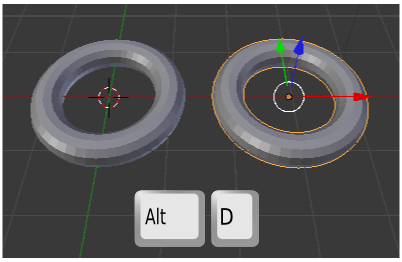
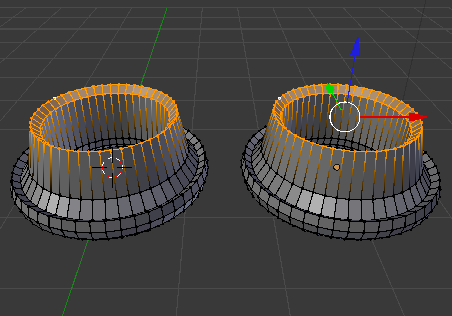
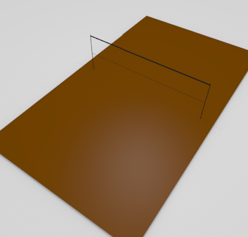
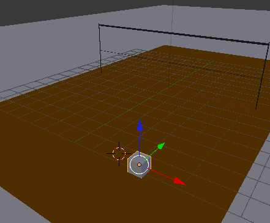
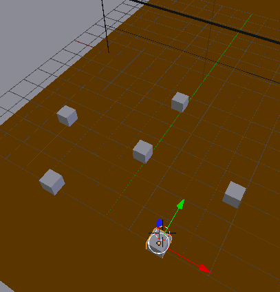
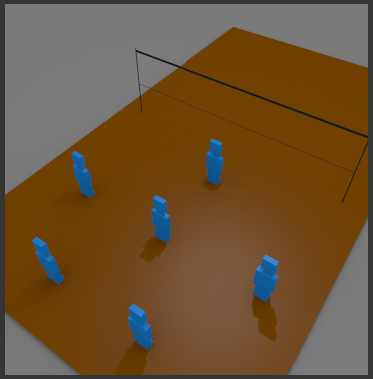

Duplicados
Basta cambiar el tipo de duplicado para conseguir clones que heredan las transformaciones. Hasta ahora siempre hemos usado "Shift_D" (Objeto/Duplicar) pero si utilizamos "Alt_D" (Objeto/Duplicar vinculado) conseguiremos lo que estamos buscando. Recordamos que el duplicado se genera sobre el original y que hay que desplazarlo.
Ahora tendremos en cuenta lo siguiente:
- En Modo Objeto
 no habrá ningún tipo de vinculación por lo que las transformaciones de escalado, rotación, desplazamiento o borrado sólo afectarán al objeto editado. Sin embargo es importante este modo de edición porque el objeto que tengamos seleccionado es el que podrá editarse al acceder a Modo Edición
no habrá ningún tipo de vinculación por lo que las transformaciones de escalado, rotación, desplazamiento o borrado sólo afectarán al objeto editado. Sin embargo es importante este modo de edición porque el objeto que tengamos seleccionado es el que podrá editarse al acceder a Modo Edición  . Por ejemplo en la imagen anterior está seleccionado el toroide de la derecha y es por eso que en la siguiente imagen el Manipulador 3D aparece en esa malla.
. Por ejemplo en la imagen anterior está seleccionado el toroide de la derecha y es por eso que en la siguiente imagen el Manipulador 3D aparece en esa malla.
- En Modo Edición toda transformación será heredada, desde el desplazamiento de un vértice a un borrado de toda la malla.

El hecho de que las transformaciones desde Modo Objeto  no se hereden le da a este recurso infinitas posibilidades. Sin embargo tarde o temprano querremos desvincular alguno de los duplicados. La solución: en Modo Objeto
no se hereden le da a este recurso infinitas posibilidades. Sin embargo tarde o temprano querremos desvincular alguno de los duplicados. La solución: en Modo Objeto  seleccionamos el que queremos que se desvincule y seguimos el menú Objeto/Hacer monousuario/Objeto y datos.
seleccionamos el que queremos que se desvincule y seguimos el menú Objeto/Hacer monousuario/Objeto y datos.
Datos vinculados
Se puede comprobar cómo hay varias posibilidades para desvincular. En nuestro ejemplo, si el objeto tuviera un material asignado, este material continuaría vinculado porque en la opción elegida no estaba incluida.
Ejercitación
Queremos una representación de la colocación de los jugadores de voleibol para la recepción.
Prepara un plano que simule una cancha y con unos cilindros escalados adecuadamente prepara una red sencilla.
Después añade un cubo en la posición de uno de los jugadores.
Crea los duplicados vinculados con la distribución adecuada.

Selecciona el objeto con el que mejor te resulte trabajar, pasa a Modo Edición  y crea a los jugadores con extrusiones ("E"), extrusiones nulas "E+Intro" y añadiendo bucles ("Control_R"). El nivel de detalle depende de ti, lo importante es practicar el trabajo con clones. Nosotros te proponemos unos personajes esquemáticos como estos.
y crea a los jugadores con extrusiones ("E"), extrusiones nulas "E+Intro" y añadiendo bucles ("Control_R"). El nivel de detalle depende de ti, lo importante es practicar el trabajo con clones. Nosotros te proponemos unos personajes esquemáticos como estos.
Un posible render...
La ventaja ahora es que al aumentar el nivel de detalle de uno de los jugadores, todos los demás heredarán esas ediciones.
Los duplicados clonados ahorran memoria
Aunque no vayamos a usar las propieades de la clonación es muy interesante usar este tipo de duplicados porque ahorran memoria del ordenador al heredar la información de la malla.